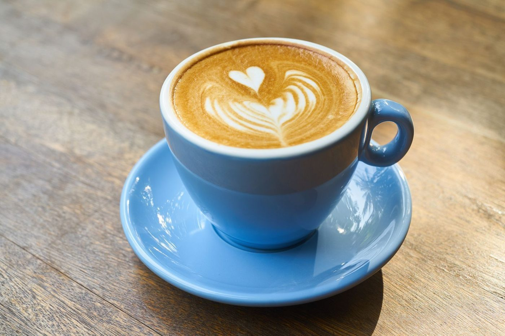
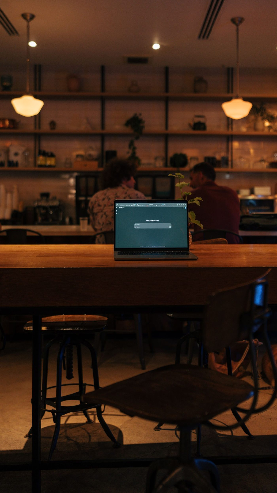

At the cafe


Downtown Richmond, Virginia
A downtown Richmond coffee roastery and cafe, owned by Jennie Skinner, serving locally roasted coffee, locally made pastries, sandwiches, focaccia, affogato, and wine.

Sefton Coffee Company is a coffee roastery and cafe in downtown Richmond, owned by Jennie Skinner. Its drinks include a cinnamon vanilla latte, an orange honey cold brew with oat milk, a coconut rose latte, and honey and spice drinks. Its food includes locally made pastries with gluten-free options, such as a cardamom roll, croissants, and cookies, plus sandwiches, focaccia, and affogato. The cafe has limited indoor seating and outdoor tables, and offers takeout and delivery.

24 N 8th St, Richmond, VA 23219
Sunday 9:00 AM to 3:00 PM; Monday to Friday 8:00 AM to 5:00 PM; Saturday 9:00 AM to 3:00 PM